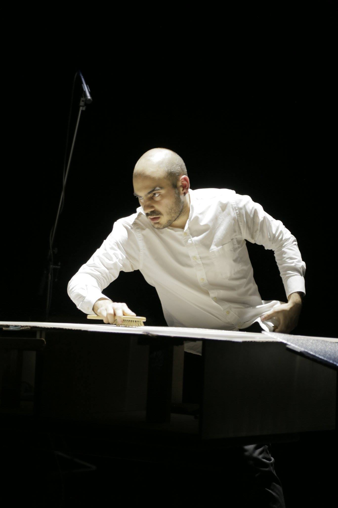

splitting
Diving into the intricate interplay between sound and silence, "Splitting" is a groundbreaking contemporary music performance that defies traditional boundaries. This immersive journey takes the audience on a profound exploration of the auditory spectrum, where the collision of sound and non-sound becomes an art form of its own. From the iconic works of George Aperghis and Vinko Globokar to today's Pierluigi Billone and Michael Maierhof, "Splitting" crafts a multisensory experience that challenges perceptions and expands the horizons of sonic expression.


×